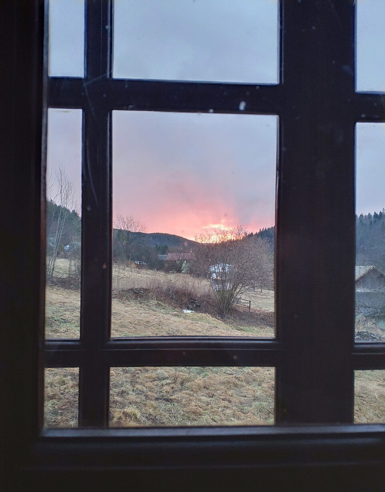

Ім’я учня, містоприйшла через нічне хропіння
Пауза 12 → 35 с
Тут 2–3 речення учня своїми словами: з чим прийшов і що змінилося за місяць.
приклад форматуМетод Бутейка · онлайн
Особистий курс методу Бутейка в Zoom: 10 занять за місяць, контрольна пауза на кожному занятті і супровід у чаті. Почніть з тесту, він займає одну хвилину.
З чим приходять
З цим найчастіше приходять на курс. Метод Бутейка пов’язує такі стани з тим, що людина дихає більше, ніж потрібно. Не замінює лікування.
Крок 1 · 60 секунд
З цієї цифри починається кожне заняття. Після тесту Telegram-бот надішле план і перші уроки саме під ваш результат.
Тест не є діагнозом. Якщо вам зле, не затримуйте дихання і зверніться до лікаря.
Як працює метод
Український вчений Костянтин Бутейко (1923–2003) помітив, що багато людей хронічно дихають більше, ніж потрібно тілу. Метод м’яко зменшує цю надлишкову вентиляцію.
Історії учнів
Пауза 12 → 35 с
Тут 2–3 речення учня своїми словами: з чим прийшов і що змінилося за місяць.
приклад форматуПауза 15 → 40 с
Тут 2–3 речення учня своїми словами: з чим прийшов і що змінилося за місяць.
приклад форматуПауза 18 → 45 с
Тут 2–3 речення учня своїми словами: з чим прийшов і що змінилося за місяць.
приклад форматуБуло → стало
23 000 грн
за весь курс, це близько 2 300 грн за заняття.
Маршрут · 4 етапи
Загальна структура одна, але вправи, темп і навантаження Алік підбирає під вас.
 01
01Ключова навичка: Знати свою точку старту
Результат
Ви знаєте свої цифри і робите першу практику під наглядом Аліка.
Ключова навичка: Зменшувати вентиляцію без напруги
Результат
Пауза починає рости, а практика стає щоденною звичкою.
 03
03Ключова навичка: Тримати навичку в русі й навантаженні
Результат
Ви дихаєте спокійно не лише на занятті, а впродовж дня.
Ключова навичка: Практикувати самостійно
Результат
Метод стає вашим інструментом на все життя.
Мета курсу
Я не прив’язую учнів до себе. Після десяти занять ви знаєте, що робити, вмієте міряти свій стан і користуєтеся методом самостійно, вдома, у дорозі, все життя.
Диплом методиста-ревізора ВЛГД: право навчати методу і готувати методистів.
Бакалавр фізичної терапії та ерготерапії, магістр біології та здоров’я людини.
Співавтор підручника з нейрореабілітації з професором Валерієм Сокрутом.
150+ методистів у Європі, Азії, Африці та Америці, конференції в Токіо та Erasmus+ REHAB.

Питання
Не знайшли відповіді? Алік відповідає в Telegram сам.
Ні. Метод Бутейка не замінює діагностику і лікування, а методист не призначає й не скасовує ліки. При хронічних хворобах порадьтеся з лікарем.
Ні. Заняття проходять удома, а навантаження підбирається під ваш стан.
Так, навчання повністю онлайн. Для оплати іноземною карткою напишіть Аліку, він надішле реквізити.
Заняття можна проводити в Telegram або іншому зручному месенджері.
Алік розпитає про ваш стан і цілі та чесно скаже, чи підходить вам курс.